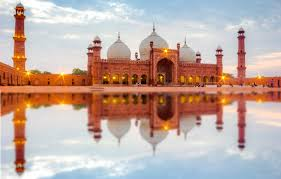

Go Back To Home
Punjab,Pakistan

A Land of Rich History and Vibrant Culture
Punjab, the heartland of Pakistan, is a province steeped in history, renowned for its fertile plains, and a cradle of diverse cultures. It is the most populous province in Pakistan, home to over half of the country's population.
Historical Significance
The land of Punjab has witnessed the rise and fall of numerous civilizations. It was a part of the ancient Indus Valley Civilization, and later, it became a battleground for various empires, including the Mughals and the British. This rich history has left behind a legacy of stunning architectural marvels, such as the Badshahi Mosque in Lahore and the Shalimar Gardens.
Geographical Features
Punjab is primarily an agricultural region, blessed with fertile lands irrigated by the five rivers – the Jhelum, Chenab, Ravi, Sutlej, and Beas – from which it derives its name ("Panj" meaning five and "ab" meaning water). The province also encompasses the Cholistan Desert, adding to its diverse landscape.
Cultural Tapestry
Punjab is a melting pot of cultures, where traditions and modernity coexist. The people of Punjab are known for their warm hospitality, vibrant festivals, and rich folk music and dance. The province is also famous for its delicious cuisine, particularly its tandoori dishes and sweets.
Economic Hub
Punjab is the economic powerhouse of Pakistan, contributing significantly to the country's GDP. It is home to major industries, including textiles, agriculture, and manufacturing. The province is also a hub for trade and commerce, with bustling cities like Lahore and Faisalabad serving as major commercial centers.
Challenges and Opportunities
Despite its economic and cultural significance, Punjab faces challenges such as poverty, unemployment, and environmental issues. However, the province also presents numerous opportunities for growth and development, particularly in the areas of education, infrastructure, and tourism.
Conclusion
Punjab is a land of contrasts, where ancient history meets modern aspirations. It is a province that continues to evolve, while cherishing its rich heritage and cultural diversity. As Pakistan strives for progress and prosperity, Punjab will undoubtedly play a pivotal role in shaping the nation's future.